ВОГНЕВА ПІДГОТОВКА
Правила стрільби зі стрілецької зброї.
ТАБЛИЧНІ умови для стрільби
Умови, що впливають на політ кулі поділяють по наступним категоріям:
- Метеорологічні (атмосферний тиск, температура повітря, відносна вологість повітря, вітер);
- Балістичні (температура заряду, початкова швидкість, вага і форма снаряда).
- Топографічні (крен бойової машини, гранатомета, осі цапф гармати, кут місця цілі)
- Тактичні (тактична обстановка, при я кій ведеться постріл)
ТАБЛИЧНІ умови для стрільби
Табличні дані траєкторії відповідають нормальним умовам стрільби.
Метеорологічні:
- атмосферний тиск - 750 мм рт. Ст.
- температура повітря - +15°С
- відносна вологість повітря – 50%
- атмосфера нерухома - вітру немає
Балістичні:
- температура заряду - +15°С
- початкова швидкість – таблична (зазначена в таблицях стрільби)
- вага і форма снаряда (кулі) - табличні
Топографічні:
- крену бойової машини, гранатомета, осі цапф гармати - немає
- ціль знаходиться на горизонті зброї, тобто кут місця цілі дорівнює нулю
Тактичні:
- стрільба ведеться з місця по нерухомій цілі
Вибір цілі. Вихідні установки для стрільби
Типи цілей.
Цілі для стрільби зі стрілецької зброї поділяються на:
- поодинокі
- групові.
За своїм станом:
- нерухомі
- ті, які з'являються та рухаються
Вибір цілі.
Для автоматників (кулеметників) найбільш характерними є живі цілі - обслуга кулеметів та гармат, групи стрільців чи окремі фігури, що ведуть вогонь із різних положень, а також жива сила на автомобілях, мотоциклах.
Для снайперів - офіцери, спостерігачі, снайпери, обслуга гармат та інші цілі, які становлять найбільшу загрозу своєму підрозділу.
Крім того, зі стрілецької зброї вогонь ведеться і по повітряних цілях.
Призначення вихідних установок
Вихідними установками для стрільби є установки для здійснення першого пострілу (черги).
При стрільбі з автомата Калашникова,наприклад, вихідними установками є визначення положень ПРИЦІЛУ і ТОЧКИ ПРИЦІЛЮВАННЯ з урахуванням умов стрільби.
При точному визначенні дальності до цілі та при табличних умовах стрільби приціл призначається відповідно дальності до цілі, а точка прицілювання вибирається в центрі цілі.
Призначення вихідної установки прицілу при стрільбі зі стрілецької зброї нерозривно пов'язане з вибором ТОЧКИ ПРИЦІЛЮВАННЯ.
При стрільбі по високих цілях з установкою прицілу, що відповідає відстані до цілі (наприклад, на 500 м - приціл 5), найвигіднішою точкою прицілювання за висотою є середина цілі, тому що при цьому середня траєкторія пройде через центр цілі і ймовірність влучення буде найбільшою
Тобто грубо кажучи, теоретично, якщо ПРИЦІЛ відповідає дальності до цілі, то куди ти цілишся, туди і маєш попасти. АЛЕ!!! По факту куля не летить прямо ні по горизонталі ні по вертикалі. Відбувається явище розсіювання тобто відхилення траекторії польоту кулі від точки прицілювання. Чим більше дальність до цілі, тим більше має ефект розсіювання. На це може впливати багато факторів, наприклад, ті що вказані в першому розділі, так і чисто людський фактор, такий як недостатні навички стрільби, недобре утримання та закріплення автомата, положення для стрільби тощо.
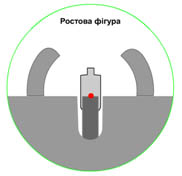

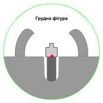 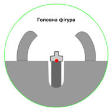 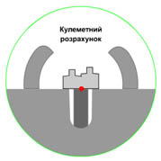
Зі стрілецької зброї з механічними прицілами по низьких цілях (піхота, що залягла чи окопалася, та вогневі засоби) прицілитися в середину цілі часто буває важко - складно визначити середину фігури, тому що мушка закриває велику частину цілі. Тому, коли ціль видна погано, точку прицілювання необхідно вибирати на нижньому краю цілі.
Стрільба по цілях на дальності прямого пострілу
Постріл, при якому траєкторія не піднімається над лінією прицілювання вище цілі на всьому своєму протязі, називається прямим (це правило діє для випадку коли лінія прицілювання проходить по нижньому зрізу цілі)
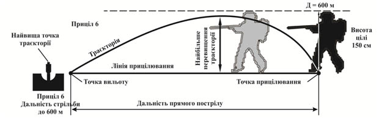Дальність прямого пострілу залежить від висоти цілі і настильності траєкторії. Чим вище ціль і чим настильніша траєкторія, тим більше дальність прямого пострілу і тим на більшому протязі місцевості ціль може бути уражена з однією установкою прицілу.
Так розрізняють дальності прямого пострілу для грудної фігури (50 см висотою), ростової фігури (висотою 150 см), фігури, що біжить.
Зазвичай ці дані вказані в ТТХ зброї. Дуже важливо їх розрізняти. Часто запитують просто яка саме дальність прямого пострілу, треба завше перепитувати для якої фігури (для якого габариту цілі).
Велике значення має правильний вибір ТП (точки прицілювання) за висотою при стрільбі з незмінною установкою прицілу в межах дальності прямого пострілу.
В межах дальності прямого пострілу в напружені моменти бою стрільба може вестися:
- без перестановки прицілу,
- ТП за висотою варто обирати в середині цілі;
- у разі наближення цілі знижувати ТП до нижнього краю;
На малюнку видно, що ближче до середини траекторії точка прицілювання обирається навіть нижче силуету цілі. Так як на цьому проміжку висота траекторії польоту кулі найвища. Тому якщо ви, наприклад, цілитесь в центр ростової фігури (150 см), яка знаходиться на відстані 300 м від вас, а висота траекторії польоту кулі на такій дистанції складатиме 120 см, то очевидно що куля перелетить ціль ще й з запасом.
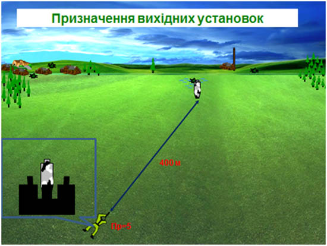 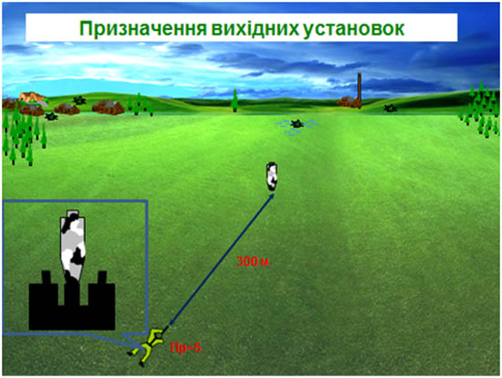 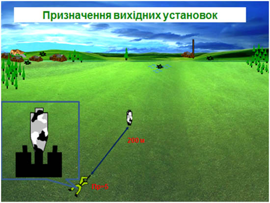Постійна установка прицілу (постоянка).
Так, наприклад, показчик «П» на прицільному пристрої АКМ (АКМС) відповідає прицілу 3. Дальність прямого пострілу по грудній фігурі для АКМ складає 350 м.
Для ПК показник «П» відповідає прицілу 4, а дальність прямого пострілу по грудній фігурі складає 420 м.
Внесення поправок до стрільби
Вплив умов стрільби на політ кулі. Польові правила стрільби.
В реальних умовах при стрільбі зі СЗ значно впливають наступні умови:
на визначення установки прицілу :
- температура навколишнього середовища;
- кут місця цілі
- атмосферний тиск.
на визначення точки прицілювання за напрямком:
- напрямок та швидкість бічного вітру;
- напрямок та швидкість флангового або косого переміщення цілі.
При відхиленні умов стрільби від нормальних (табличних) може виникнути необхідність визначення і обліку поправок дальності і напряму стрільби.
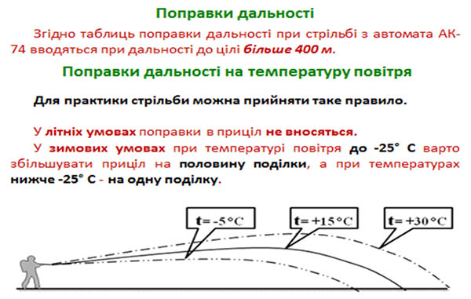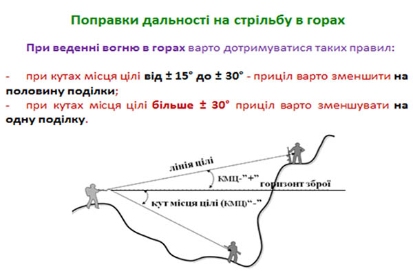
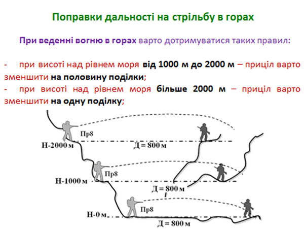
Вибір точки прицілювання за бічним напрямком.
При стрільбі по нерухомій цілі відхилення середньої траєкторії може бути викликане бічним вітром і деривацією. Поправки напрямку, які наводяться в таблицях стрільби, показують, що основний вплив на відхилення куль робить бічний вітер, а поправки на деривацію при стрільбі зі стрілецької зброї в основному не враховуються. Поправки на бічний вітер На практиці поправки враховують на вплив бічного вітру, що розділяють на: слабкий(2-3 м/с), помірний (4-6 м/с), сильний (8-12м/с).
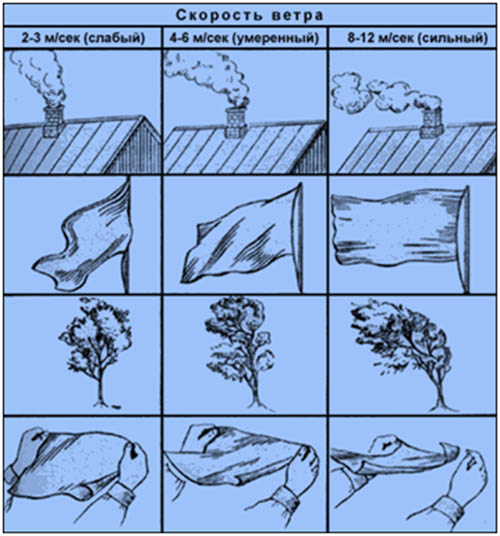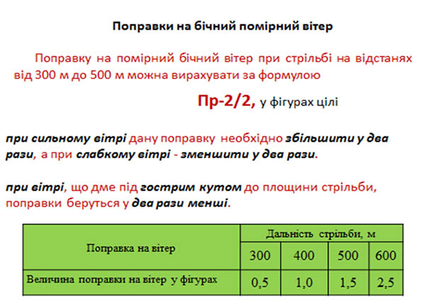
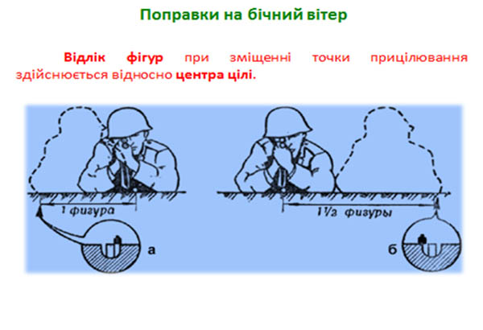
Використані джерела
- Стрілецька зброя - ГОРЧАКОВ Л.О.
- Навчальні матеріали Академії сухопутних військ імені гетьмана Петра Сагайдачного